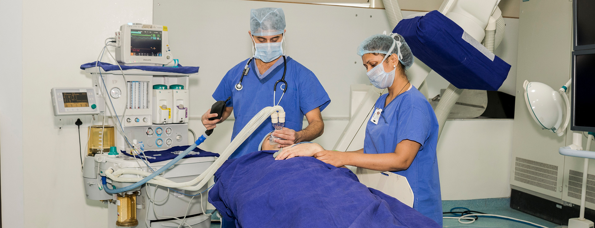
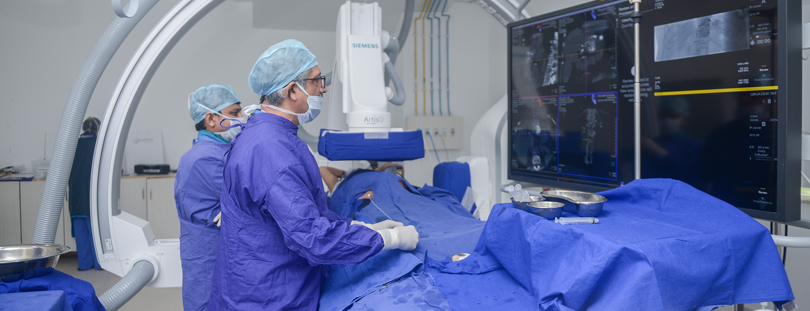
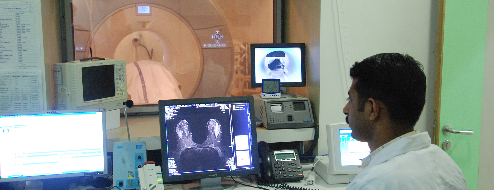

Our services
Blood Services
Emergency services
OPD timings
Physical Therapy
Anesthesiology services
Nursing
Pharmacy
Radiology services
Diagnostic services
Health Services
Surgical services
Counseling
Family welfare services
Genetic testing and counseling
ICU services
Inpatient services
Mental healthcare
Ward Facilities
Case management services
Dentistry
Dialysis
Medicine
Obstetrical services

General Surgery
The Department of General Surgery deals with a range of surgical ailments and emergencies. In addition to treating minor swellings, the surgeons are adept at complex abdominal surgeries and trauma cases. Most abdominal surgeries are performed through laparoscopy (keyhole surgery). Backing this team of highly skilled surgeons are trained nurses and technicians and state-of-the-art operation theatres equipped with the latest technology.
Interventional Radiology
With state of the art biplane angiography equipment, Interventional Radiology at Kokilaben Dhirubhai Ambani Hospital includes peripheral vascular and neuro interventions. The department is a renowned centre for highly complex interventional work. Peripheral vascular interventions at the hospital include peripheral angioplasties and stenting, aortic endovascular stent grafts, venous interventions including laser therapy for varicose veins, and endovascular management of liver cancers.All neurointerventional work is also performed including the arterial and venous system. Non vascular interventions such as on the liver, kidneys and spine are also routinely performed.
Radiology
RADIOLOGY Overview Our Services+ Specialists Technology View Doctors Find A Specialist Radiology at Kokilaben Dhirubhai Ambani Hospital is a leading multispeciality department of the country offering the complete spectrum of diagnostic and interventional services. It is one of the few centres in the country with specialist Radiology consultants in Vascular Radiology, Neuroradiology, Musculoskeletal Radiology, Abdominal, Cardiac, Chest and Women's Imaging and Interventional Radiology. The consultants in the department are focussed and specialised in various super specialities.
